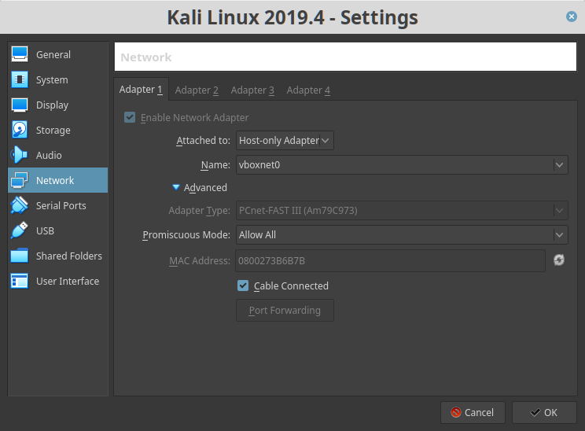
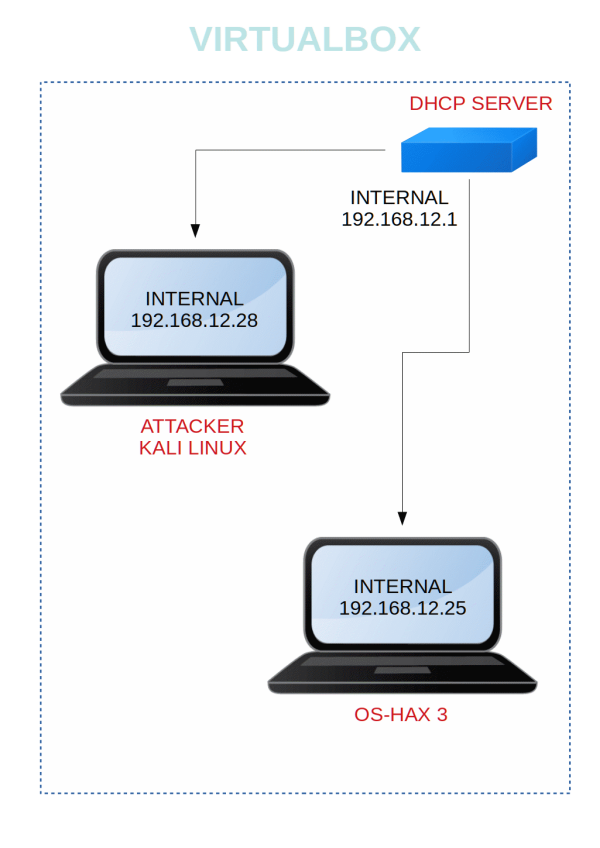

Os-Hax: 3
▸ 1. Scan Network
▸ 2. Finding Services and Ports
▸ 3. Apache Exploit. Port 80
▸ 4. Find a password to log
▸ 5. Create a msfvenom php reverse
▸ 6. Start our Metasploit msfconsole payload listener
▸ 7. Get a Shell
▸ 8. Enumerate folders
▸ 9. Switch user (1st Flag)
▸ 10. See sudoers
▸ 11. Getting root (2nd Flag)
Difficulty: Intermediate
Flag: 2 Flag first user and second root
Learning: Web Application | Enumeration | Privilege Escalation
Download (Mirror): https://download.vulnhub.com/hacknos/Os-hackNos-3.ova
Download (Torrent): https://download.vulnhub.com/hacknos/Os-hackNos-3.ova.torrent
Install the machine on VirtualBox:
1. Download the file.
2. On Virtualbox choose File->Import Appliance.
3. Select the file “ova”.
4. Accept to import.
Virtual Machine Network Settings
Both Machines on “Host-only Adapter”.
root
Watch your Machine IP

Diagram

Challenge
Get the flags.
Penetrating Methodologies
▸ 1. Scan Network
▸ 2. Finding Services and Ports
▸ 3. Apache Exploit. Port 80
▸ 4. Find a password to log
▸ 5. Create a msfvenom php reverse
▸ 6. Start our Metasploit msfconsole payload listener
▸ 7. Get a Shell
▸ 8. Enumerate folders
▸ 9. Switch user (1st Flag)
▸ 10. See sudoers
▸ 11. Getting root (2nd Flag)
 Index
Index